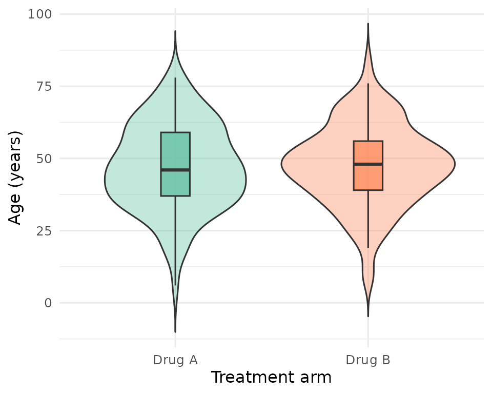
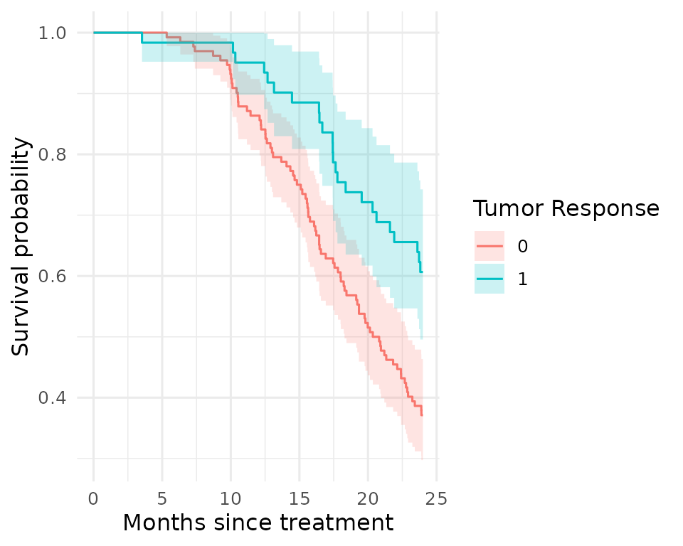

Introduction
This tutorial walks through a complete lbstproj workflow
using a fake oncology project. We use the trial dataset - a
simulated randomized clinical trial of 200 patients assigned to
Drug A or Drug B - to demonstrate how
to:
- Scaffold a standardized project
- Register outputs in the Table of Tables (TOT)
- Write and run data preparation, figure, and table scripts
- Generate a self-contained report
1. Create a project
create_project() builds the full directory structure and
adds a DESCRIPTION file and a blank Table of Tables. We
pass force = TRUE and open = FALSE to skip
interactive prompts.
The table_engine argument selects which table package
the project uses: "gt" (default) generates Quarto reports,
while "flextable" generates R Markdown reports rendered via
officedown. See Section 10 for the full
flextable workflow.
library(lbstproj)
create_project(
path = tmp_proj_dir,
title = "Fake oncology trial",
client = "John Doe",
department = "Oncology",
author = "Jane Doe",
email = "jane.doe@university.com",
open = FALSE,
force = TRUE
)The project now has the following structure:
fs::dir_tree(tmp_proj_dir, recurse = TRUE)
#> /tmp/RtmpereC6T/fake-trial
#> ├── DESCRIPTION
#> ├── R
#> │ ├── data
#> │ ├── figures
#> │ ├── functions
#> │ └── tables
#> ├── data
#> │ ├── figures
#> │ ├── processed
#> │ ├── raw
#> │ ├── tables
#> │ └── tot
#> │ └── table_of_tables.xlsx
#> ├── docs
#> │ ├── costing.docx
#> │ └── meeting_notes.docx
#> ├── fake-trial.Rproj
#> ├── report
#> │ └── utils
#> └── results
#> ├── figures
#> ├── reports
#> └── tables| Folder | Purpose |
|---|---|
data/raw/ |
Raw input files (CSV, Excel, …) |
data/processed/ |
Cleaned datasets saved as .rds
|
data/tables/ |
GT tables saved as .rds
|
data/tot/ |
The Table of Tables (Excel + cached .rds) |
R/data/ |
Data preparation scripts |
R/figures/ |
Figure scripts |
R/tables/ |
Table scripts |
results/figures/ |
Final PNG/PDF figures |
results/tables/ |
Word tables (.docx) |
report/ |
Quarto report |
2. Import raw data
The trial dataset is bundled with lbstproj
as a CSV. Copy it to data/raw/:
# In a real project you would place your raw data file in data/raw/ manually.
fs::file_copy("path/to/trial.csv", "data/raw/trial.csv")
trial_raw <- read.csv("data/raw/trial.csv")
head(trial_raw)
#> trt age marker stage grade response death ttdeath
#> 1 Drug A 23 0.160 T1 II 0 0 24.00
#> 2 Drug B 9 1.107 T2 I 1 0 24.00
#> 3 Drug A 31 0.277 T1 II 0 0 24.00
#> 4 Drug A NA 2.067 T3 III 1 1 17.64
#> 5 Drug A 51 2.767 T4 III 1 1 16.43
#> 6 Drug B 39 0.613 T4 I 0 1 15.64The dataset has 200 patients with eight variables: treatment arm
(trt), age, biomarker level
(marker), tumour stage (stage), histological
grade (grade), binary response, and survival
endpoints (death, ttdeath).
3. The Table of Tables
The Table of Tables (TOT) is the central registry of
every output your project will produce. It lives in
data/tot/table_of_tables.xlsx and has four columns:
| Column | Description |
|---|---|
id |
Short unique identifier (referenced inside scripts) |
type |
"figure" or "table"
|
name |
File name used for saving (letters, numbers, hyphens only) |
caption |
Caption that appears in the report |
For this project we plan two figures and two tables:
tot_data <- data.frame(
id = c("fig-01", "fig-02", "tab-01", "tab-02"),
type = c("figure", "figure", "table", "table"),
name = c("fig-age-dist", "fig-km", "tab-baseline", "tab-response"),
caption = c(
"Age distribution by treatment arm.",
"Kaplan-Meier curve of the survival over time per treatment arm.",
"Baseline patient characteristics by treatment arm.",
"Tumour response rates by treatment arm."
),
stringsAsFactors = FALSE
)
tot_data
#> id type name
#> 1 fig-01 figure fig-age-dist
#> 2 fig-02 figure fig-km
#> 3 tab-01 table tab-baseline
#> 4 tab-02 table tab-response
#> caption
#> 1 Age distribution by treatment arm.
#> 2 Kaplan-Meier curve of the survival over time per treatment arm.
#> 3 Baseline patient characteristics by treatment arm.
#> 4 Tumour response rates by treatment arm.After filling in the spreadsheet, call import_tot() to
validate it and cache it as an .rds file:
import_tot()
#> ℹ Importing Table of Tables (TOT) to data/tot/tot.rdsYou can always inspect the TOT with load_tot():
load_tot()
#> # A tibble: 4 × 4
#> id type name caption
#> <chr> <chr> <chr> <chr>
#> 1 fig-01 figure fig-age-dist Age distribution by treatment arm.
#> 2 fig-02 figure fig-km Kaplan-Meier curve of the survival over time per t…
#> 3 tab-01 table tab-baseline Baseline patient characteristics by treatment arm.
#> 4 tab-02 table tab-response Tumour response rates by treatment arm.4. Create analysis scripts
create_from_tot() reads the TOT and generates stub R
scripts for each entry. Always do a dry run first to
preview what will be created:
create_from_tot(dry_run = TRUE)
#>
#> ── Figures ──
#>
#> ℹ Figures: 2 in TOT, 0 on disk, 0 matched.
#> ℹ Figures: would generate 2 missing programs.
#> → Figures: would create 2 programs in R/figures.
#> • R/figures/fig-age-dist.R
#> • R/figures/fig-km.R
#>
#> ── Tables ──
#>
#> ℹ Tables: 2 in TOT, 0 on disk, 0 matched.
#> ℹ Tables: would generate 2 missing programs.
#> → Tables: would create 2 programs in R/tables.
#> • R/tables/tab-baseline.R
#> • R/tables/tab-response.ROnce satisfied, run without dry_run to create the
stubs:
create_from_tot(dry_run = FALSE)
#>
#> ── Figures ──
#>
#> ℹ Figures: 2 in TOT, 0 on disk, 0 matched.
#> ℹ Figures: generating 2 missing programs.
#> → Figures: created 2 programs in R/figures.
#> • R/figures/fig-age-dist.R
#> • R/figures/fig-km.R
#>
#> ── Tables ──
#>
#> ℹ Tables: 2 in TOT, 0 on disk, 0 matched.
#> ℹ Tables: generating 2 missing programs.
#> → Tables: created 2 programs in R/tables.
#> • R/tables/tab-baseline.R
#> • R/tables/tab-response.REach stub is pre-filled with a header, get_info() to
retrieve TOT metadata, library calls, and placeholder comments:
#' Name : fig-age-dist.R
#' Author : Jane Doe
#' Date : 14 Apr 2026
#' Purpose :
#' Files created:
#' - `results/figures/fig-age-dist.png/pdf`
#' Edits :
#' - 14 Apr 2026: Created file.
# File info ---------------------------------------------------------------
info <- get_info(name = "fig-age-dist")
# Packages ----------------------------------------------------------------
library(dplyr)
library(ggplot2)
# Load data ---------------------------------------------------------------
data <- NULL # Load processed data here
# Generate figure ---------------------------------------------------------
fig <- NULL # Replace NULL with your figure code, e.g. ggplot(data) + ...
# Save figure -------------------------------------------------------------
save_figure(fig, name = info$name)You fill in the placeholder sections with your analysis. The next sections show the completed scripts for our oncology project.
5. Data preparation
All cleaning and reshaping happens in R/data/. The
script below loads the raw CSV, coerces categorical variables to
factors, and saves the result with save_data().
# R/data/trial-clean.R
library(dplyr)
# Load raw data ---------------------------------------------------------------
raw <- read.csv("data/raw/trial.csv")
# Clean -----------------------------------------------------------------------
trial <- raw |>
mutate(
trt = factor(trt),
stage = factor(stage),
grade = factor(grade, levels = c("I", "II", "III"))
)
# Save ------------------------------------------------------------------------
save_data(trial, name = "trial-clean")After running the script you can inspect the processed dataset:
trial <- readRDS("data/processed/trial-clean.rds")
dplyr::glimpse(trial)
#> Rows: 200
#> Columns: 8
#> $ trt <fct> Drug A, Drug B, Drug A, Drug A, Drug A, Drug B, Drug A, Drug …
#> $ age <int> 23, 9, 31, NA, 51, 39, 37, 32, 31, 34, 42, 63, 54, 21, 48, 71…
#> $ marker <dbl> 0.160, 1.107, 0.277, 2.067, 2.767, 0.613, 0.354, 1.739, 0.144…
#> $ stage <fct> T1, T2, T1, T3, T4, T4, T1, T1, T1, T3, T1, T3, T4, T4, T1, T…
#> $ grade <fct> II, I, II, III, III, I, II, I, II, I, III, I, III, I, I, III,…
#> $ response <int> 0, 1, 0, 1, 1, 0, 0, 0, 0, 0, 0, 1, 0, 0, 0, 0, 1, 0, 0, 0, 0…
#> $ death <int> 0, 0, 0, 1, 1, 1, 0, 1, 0, 1, 0, 0, 1, 1, 1, 1, 0, 1, 0, 0, 0…
#> $ ttdeath <dbl> 24.00, 24.00, 24.00, 17.64, 16.43, 15.64, 24.00, 18.43, 24.00…6. Figures
Figure 1 - Age distribution
# R/figures/fig-age-dist.R
library(dplyr)
library(ggplot2)
info <- get_info("fig-01")
trial <- readRDS("data/processed/trial-clean.rds")
fig <- ggplot(trial, aes(x = trt, y = age, fill = trt)) +
geom_violin(alpha = 0.4, trim = FALSE) +
geom_boxplot(width = 0.15, alpha = 0.8, outlier.shape = NA) +
scale_fill_brewer(palette = "Set2") +
labs(x = "Treatment arm", y = "Age (years)") +
theme_minimal(base_size = 12) +
theme(legend.position = "none")
save_figure(fig, name = "fig-age-dist", width = 5, height = 4)#> Warning: Removed 11 rows containing non-finite outside the scale range
#> (`stat_ydensity()`).
#> Warning: Removed 11 rows containing non-finite outside the scale range
#> (`stat_boxplot()`).
Age distribution by treatment arm.
Figure 2 - Kaplan-Meier curve
# R/figures/fig-km.R
library(dplyr)
library(ggplot2)
library(ggsurvfit)
info <- get_info("fig-02")
trial <- readRDS("data/processed/trial-clean.rds")
mod <- survfit2(
data = data,
formula = Surv(ttdeath, death) ~ response
)
fig <- ggsurvfit(mod) +
add_confidence_interval() +
labs(
x = "Months since treatment",
y = "Survival probability",
color = "Tumor Response",
fill = "Tumor Response"
) +
theme_minimal(base_size = 12)
save_figure(fig, name = "fig-km", width = 5, height = 4)
Tumour response rate by treatment arm.
7. Tables
Tables are saved as gt objects and optionally exported
to Word. The workflow below uses gtsummary to produce
publication-ready summaries, then converts to gt with
as_gt() before saving.
Table 1 - Baseline characteristics
# R/tables/tab-baseline.R
library(dplyr)
library(gtsummary)
info <- get_info("tab-01")
trial <- readRDS("data/processed/trial-clean.rds")
tab <- trial |>
select(trt, age, stage, grade) |>
tbl_summary(
by = trt,
label = list(
age ~ "Age (years)",
stage ~ "Tumour stage",
grade ~ "Grade"
)
) |>
add_overall() |>
add_p() |>
modify_header(label ~ "**Characteristic**") |>
bold_labels() |>
as_gt() |>
gt::tab_header(title = info$caption)
save_table(tab, name = "tab-baseline", export = FALSE)
readRDS("data/tables/tab-baseline.rds")| Baseline patient characteristics by treatment arm. | ||||
| Characteristic |
Overall N = 2001 |
Drug A N = 981 |
Drug B N = 1021 |
p-value2 |
|---|---|---|---|---|
| Age (years) | 47 (38, 57) | 46 (37, 60) | 48 (39, 56) | 0.7 |
| Unknown | 11 | 7 | 4 | |
| Tumour stage | 0.9 | |||
| T1 | 53 (27%) | 28 (29%) | 25 (25%) | |
| T2 | 54 (27%) | 25 (26%) | 29 (28%) | |
| T3 | 43 (22%) | 22 (22%) | 21 (21%) | |
| T4 | 50 (25%) | 23 (23%) | 27 (26%) | |
| Grade | 0.9 | |||
| I | 68 (34%) | 35 (36%) | 33 (32%) | |
| II | 68 (34%) | 32 (33%) | 36 (35%) | |
| III | 64 (32%) | 31 (32%) | 33 (32%) | |
| 1 Median (Q1, Q3); n (%) | ||||
| 2 Wilcoxon rank sum test; Pearson’s Chi-squared test | ||||
Table 2 - Response rates
# R/tables/tab-response.R
library(dplyr)
library(gtsummary)
info <- get_info("tab-02")
trial <- readRDS("data/processed/trial-clean.rds")
tab <- trial |>
select(trt, response) |>
mutate(
response = factor(response, levels = c(1, 0), labels = c("Yes", "No"))
) |>
tbl_summary(
by = trt,
label = list(response ~ "Tumour response")
) |>
add_p() |>
modify_header(label ~ "**Variable**") |>
bold_labels() |>
as_gt() |>
gt::tab_header(title = info$caption)
save_table(tab, name = "tab-response", export = FALSE)
readRDS("data/tables/tab-response.rds")| Tumour response rates by treatment arm. | |||
| Variable |
Drug A N = 981 |
Drug B N = 1021 |
p-value2 |
|---|---|---|---|
| Tumour response | 28 (29%) | 33 (34%) | 0.5 |
| Unknown | 3 | 4 | |
| 1 n (%) | |||
| 2 Pearson’s Chi-squared test | |||
8. Running all outputs
Once all scripts are written, run_all_figures() and
run_all_tables() source every script in
R/figures/ and R/tables/ in alphabetical
order. They also cross-check the file list against the TOT and warn you
about any discrepancies.
9. Generating the report
Create the report scaffold
create_report() reads the TOT and generates a Quarto
file at report/report.qmd with a code chunk for every
figure and table, in the order they appear in the TOT.
create_report(output_type = "html")#> ✔ Writing report to report/report_2026_04_14.qmd.
#> ℹ Use `run_report()` to render the report.The generated file looks like this (excerpt):
---
title: "Fake oncology trial"
subtitle: "John Doe (Oncology)"
author: "Jane Doe"
date: last-modified
format:
html:
embed-resources: true
toc: true
toc-location: left-body
number-sections: true
execute:
echo: false
warning: false
message: false
---
```{r pkg}
library(here) # To generate relative file paths
library(gt) # Needed to display tables
# Create list of captions
tot <- readRDS(here("data/tot/tot.rds"))
caption_list <- setNames(as.list(tot$caption), tot$name)
# Define function to add caption to tables
add_caption <- function(x, cap) {
x |>
gt::tab_header(NULL) |>
gt::tab_caption(cap)
}
```
```{r fig-fig-age-dist }
#| fig-cap: !expr 'caption_list[["fig-age-dist"]]'
knitr::include_graphics(here("results/figures/fig-age-dist.png"))
```Render the report
Call run_report() to render the Quarto file to HTML (or
DOCX):
After reviewing the HTML report, archive it to
results/reports/ with a date-stamped filename using
archive_report():
10. Using the flextable engine
lbstproj supports two table rendering engines selected
at project creation time via the table_engine argument of
create_project():
| Engine | Table class | Report format | Rendering |
|---|---|---|---|
"gt" (default) |
gt_tbl |
Quarto (.qmd) |
quarto::quarto_render() |
"flextable" |
flextable |
R Markdown (.Rmd) |
rmarkdown::render() |
Creating a flextable project
create_project(
path = ".",
title = "My flextable project",
author = "Jane Doe",
table_engine = "flextable"
)This stores TableEngine: flextable in the project
DESCRIPTION file. All subsequent lbstproj
functions read this field automatically via
get_table_engine().
Writing table scripts
In a flextable project, table scripts must produce a
flextable object. save_table() validates the
object class and raises a clear error if the wrong engine is used.
# R/tables/tab-baseline.R (flextable project)
library(flextable)
library(dplyr)
library(gtsummary)
info <- get_info("tab-01")
trial <- readRDS("data/processed/trial-clean.rds")
tab <- trial |>
select(trt, age, stage, grade) |>
tbl_summary(by = trt) |>
as_flex_table()
save_table(tab, name = "tab-baseline")Report generation and rendering
For flextable projects, create_report() generates an
R Markdown file (.Rmd) configured for
officedown::rdocx_document instead of a Quarto file. The
chunk format also differs: table captions use the tab.cap=
knitr chunk option rather than an inline add_caption()
call.
# Generates report/report_<date>.Rmd (not .qmd)
create_report()run_report() detects the file extension and dispatches
to the correct renderer automatically — no extra arguments needed:
run_report() # calls rmarkdown::render() for .Rmd, quarto::quarto_render() for .qmdCode chunks
create_chunk() also respects the engine. For a
gt project a Quarto-style chunk is generated:
```{r tbl-tab-baseline }
tab <- readRDS(here("data/tables/tab-baseline.rds"))
tab |>
add_caption(caption_list[["tab-baseline"]])
```For a flextable project an R Markdown-style chunk
with the tab.cap= option is generated instead:
```{r tab-tab-baseline, tab.cap=caption_list[["tab-baseline"]]}
tab <- readRDS(here("data/tables/tab-baseline.rds"))
tab
```Summary
Here is the full lbstproj workflow at a glance:
library(lbstproj)
# 1 - Scaffold the project (gt engine, default)
create_project(path = ".", title = "My project", author = "Jane Doe")
# or, for a flextable/officedown project:
# create_project(..., table_engine = "flextable")
# 2 - Fill in data/tot/table_of_tables.xlsx, then import it
import_tot()
# 3 - Generate script stubs for every TOT entry
create_from_tot(dry_run = FALSE)
# 4 - Fill in the scripts, then run them all
run_all_files("data")
run_all_figures()
run_all_tables()
# 5 - Build and render the report
# gt project → report/report_<date>.qmd, rendered with quarto
create_report(output_type = "html")
run_report()
# flextable project → report/report_<date>.Rmd, rendered with rmarkdown
# create_report()
# run_report()
archive_report()